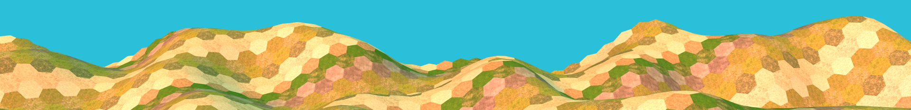

Grids

Version 4.1.0
Getting Started
- The video above shows you how to set up grids in the editor.
- For more examples, see the samples that ship with Grids (you can find them in the Package Manager, under the Samples tab once you have the Grids package selected).
- For understanding the basic concepts, read the documentation starting with Key Concepts that introduces the most important grid concepts. This is especially important for working with Grids in code.
If you want to browse the API, this page will guide you through the most important types.
For mathematical background on grid points, see Hex Geometry for Game Developers (PDF). Although this document covers hex grids specifically, the concepts should also be useful for rect grids. Amit Patel's Hexagonal Grids also has a lot of useful information about hex grids. ou can see how you do everything describe in that guide in [Amit Patel's Guide for Hex Grids and Gamelogic Grids] (content/AmitPatel.md).
Version Explanation
Grids before version 2.0.0 is in the Gamelogic.Grids namespace, and
version 2.0.0 and later are in the Gamelogic.Grids2 namespace. This is because of a complete rewrite of the versions,
and
since many games were using Grids 1, we decided to keep the old version in the Gamelogic.Grids namespace. Here and
there we fix a bug to the old version, but it is not meant for new projects.
Dependencies
In addition to .Net and the Unity API, Grids also depends on the Extensions library, which is documented separately here.